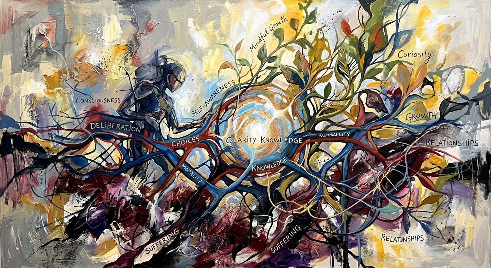

Skip to main content
Who Planted the Thought?
Team Charlotte · HNR 241
The Garden
The Tree
The Library
Paths
The Orchard
Images and other creative work
The Orchard

Plate II · Abstract image exploring consciousness, deliberation, growth of mind, and self-examination